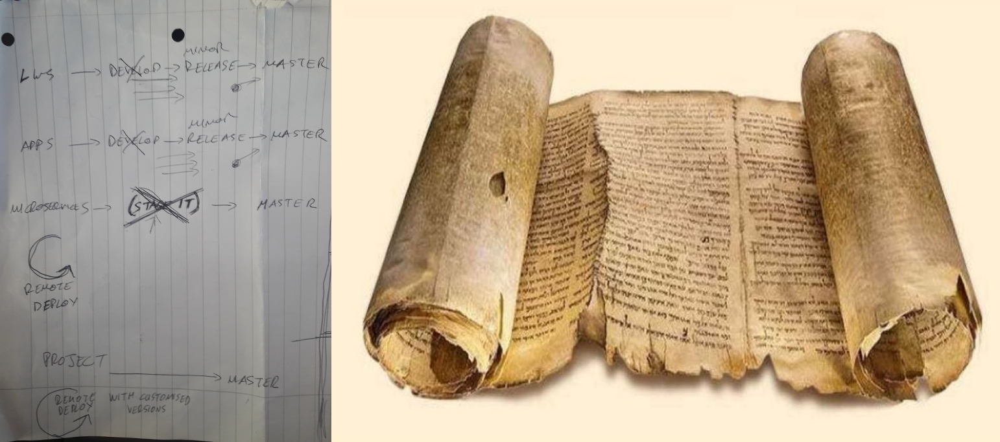
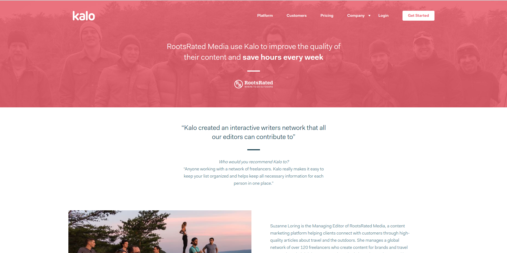
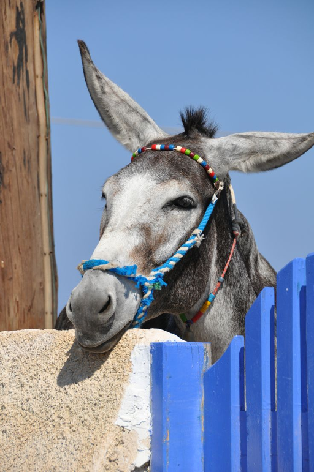
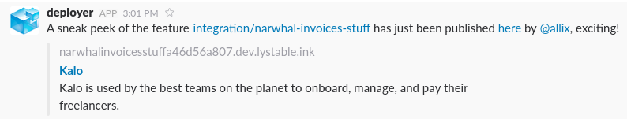
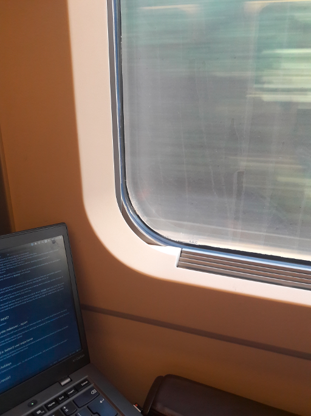

6. See prophecy attached
This is a sprintly summary of upcoming, delivered and in-progress work for the Infra DX Crew.
It’ll contain technical musings,and probably a few memes. TLDR
The scoping prophets have laid pen on scroll…
- Marketing site to be getting another make over!
- How will we give users a faster (=== better!) experience
- A more fitting development process
And as for already ongoing things…
- Second marketing site finally deprecated!!
- PaaS progress update
prophecy.pdf

What we worked on
Marketing site (now singular!)
After a long-running effort of migrating page by page, all of the index, careers, about, customers, POPSUGAR case study, The Economist case study pages are now living under the Git repo that we intend to use going forward, kalohq/eros!
The background here is that we wanted to quickly release a new marketing site some time ago which would be a significant overhaul of the previous one, and the agency we hired created a completely new repo, with completely different technologies which were incompatible with our existing CI or website assets.
This meant we had website pages scattered across both repos, duplicate assets, two different CI processes, as well as Nginx proxy logic that could handle routing between two different sites… which we have not been proud of!
The work to untangle this mess has been exclusively drive and pushed by Alex Pate and a huge shout out to him, as we’ll now be able to move a lot faster and be able to optimise our site’s speed and infrastructure. 
New case study
There’s now a new case study on our site for RootsRated! You can see it here.

UI styling abstractions
Continued migrating components into the UI library, this week having moved the Checkbox and Radio!
Rebrand
We can actually start to forget about the rebrand pretty soon.
Our core infrastructure that was still using this mysterious word lystable has been updated this sprint and this includes:
- LWS files service, so all our shareable file links will now use a rebranded bucket name and
- Docker Hub
As a sidenote, if you want to see what a Docker Hub 404 page looks like, just type in a random collection of characters: https://hub.docker.com/u/lystable/. Ours is not that bad either actually: https://kalohq.com/lystable. Oh yeah, that Kalo 404 page also got released this sprint. 
PaaS progress
PaaS here, PaaS there… what does this thing even look like anyway?
As this post is public we can’t add the login credentials here, but if you visit the dashboard UI then you can get the credentials from any of Chris, Graeme or Alex Muscar.
Remember that CI end-game we’re trying to get to again?
You can refresh your memory by checking the lightning talk slides here.
What did we release
We’ve made progress this past sprint, as we’ve both:
migrated the application configuration to the LWS repo
deployed the Nameko workers on staging, having stopped the Salt deployment in that environment altogether
integrated the PaaS with our existing service discovery platform (Hashicorp’s Consul), which means that we, completely seamlessly, kept all the benefits of DNS-based service discovery and service alerting in Grafana. We used Cisco’s open-source project mesos-consul to achieve this integration, and guess what: it’s running on the PaaS also :)
updated the re-configuration of LWS and Nameko runbook to reflect the new way to update application configuration
You got that right.. now don’t get too drunk with power!

What more do we need to go live
We’ve still only got the PaaS on staging and not on production. The reason for this is we are missing just a bit more tooling. But not too much:
- expose Docker console logs via the PaaS UI
- mount Docker container logs on the PaaS VMs
- pick what HW profiles we’re going to use in production going forward
- then it’s all the production-readiness boilerplate around external disk volumes, clustering, runbooks on how to manage services, etc… donkey work really

Release Process Makeover
Motivation
Driven by the drastic speedup in release times (TTP) that we want (see our OKR crew post), and the pace at which we wish to evolve our product, we feel forced to reconsider whether our current release process is a best fit.
Our thoughts are that it’s far from the process we’d like to have, and one of our driving principles is that when development finishes and before the feature has been merged, so should integration testing, user testing and performance testing have also finished. As a result, we’re driven to not just reduce the gap between merging a feature branch and deploying that to production, but to completely remove it.
Obviously this will not be a magical new world where user, performance and integration testing suddenly are part of the CI, which we could definitely work towards, but what we do want to have is the tools to support this in the same way as now, except with less Git and Github faffing about.
A bit more extensive review of current whereabouts and desired process, as well as healthy debate can be found in this gist. Do read through!
Getting there
The work to get us to this new world will involve:
- ensuring a smooth management of remote deploy environments
- allowing remote deploy environments to easily import production-like data
- migrating all the Dennis logic around preparing and creating release artifacts into the master branch CI build (incrementing version numbers, adding change logs etc.)
- allowing us to optionally utilise the staging environment before releasing, placing a lock on it
- scrapping the develop branch
We can say with confidence that the path to that simpler world can be worked on incrementally, to the point where we don’t consider the final step of removing develop such a biggie.
Remote Deploys
Remote deployments will be getting more and more love, to the point where we feel very comfortable upgrading components to latest versions, switching out individual components, clearing data and so on.
All of this will be to support early user, integration and performance testing, which is what we consider the ways of gaining the confidence we need to release directly to production.
This sprint we took a very small first step which is to allow the Github PR and review label to be lazily discovered at the time that the Circle build reaches the point of doing a remote deploy, to check if it should do it or not. This means those changes you used to push without initially having a PR, will now trigger a remote deploy without needing a second push… woot!

What’s up next?
What’s the plan, batman?
Marketing site makeover… again!
What with the rebrand, the self team onboarding and new case studies, our product shopfront is ever-changing!
This sprint the new designs will be getting full focus, and if you’re impatient, hit the staging link or check the sprint board now and then to see how it’s going!

Faster (i.e. better!) user experience
Chris is back!
After catching up with all the emails, he’s gonna be pushing the agenda on performance improvements, which means scoping work across cohorts and rolling out bundle optimisations for faster application load times… it’s gonna be a huge team effort from all of us for our users!

More holidays
Yes, yes Yannis is on holiday again… for the whole of next week… but look at all that stuff we delivered! 
Release watch
Backend
Flying for the most part, we had 4 out of 5 minor releases under 3 hours but 1 outlier taking 24 hours.
Take-aways here:
- more user testing before staging
Frontend
Believe it or not, frontend releases have been even faster than that, we’re rolling them out at an average of 75 minutes per release! A big shout out to everyone on the frontend!

Au revoir!
